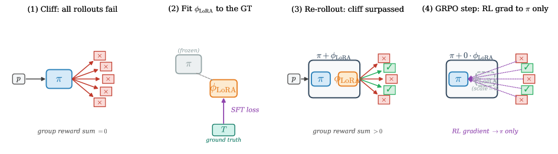

从可验证奖励学习（RLVR）已成为从大模型引出数学推理的主流配方。但它有一个结构性的盲区：在「cliff」提示上：即组内每个采样rollout都失败的提示：组归一化优势恒为零，GRPO恰恰在模型能力前沿的这些提示上产生不了任何梯度。 NVIDIA的LoRA Scaffolded Policy Optimization（LSPO）用采样时机制找回这份丢失的梯度：每个RL步检测cliff提示，在它们ground-truth解上用一个简短的监督步骤拟合小LoRA adapter，用base+adapter模型重采样这些cliff，把现在成功的完成以重要性采样校正拼回RL batch，再只对base做一步GRPO；adapter只接收监督梯度并在checkpoint时丢弃，产出纯base模型。在DeepMath-103K上、DeepSeek-R1-Distill-Qwen-1.5B、n=5配对种子的匹配1000步报告时窗下，LSPO的5种子均值在全部16个（基准, pass@k）格中匹配或超过DAPO基线（15胜1平），平均提升 +3.8点。
从可验证奖励学习（RLVR）通过让模型在可验证（例如数学答案）奖励上优化，已成为从大模型引出数学推理的主流配方（GRPO及DAPO配方）。GRPO在一个组内归一化每个rollout的优势，有效降低reward模型的方差，数学推理上非常成功。
但当这个归一化因子出错时会怎样？考虑一个模型还不会做的提示：它的能力前沿。组内每个采样rollout都错了：奖励为零。此时GRPO的组归一化优势恒为零，policy gradient是零。也就是说，恰恰是在最需要学习信号的提示上：模型正卡在能力瓶颈的提示：GRPO给不出任何梯度。论文把这称为cliff问题：这些cliff提示横在模型前，模型无法翻越，RL也就没有信号引导它翻越。
对数学推理，cliff的出现不只是毛刺，而是常态：组越大、模型越接近能力边界，出现至少一个«全部失败»组的概率越高。这让RLVR的训练在进展最需要的地方悄悄减速。

LSPO是采样时机制，包裹现有policy-gradient RL loop（这里是用DAPO风格配方的GRPO）。它专门在cliff提示上恢复梯度。核心思路：给模型挂一个小的低秩（LoRA）adapter作为临时脚手架：它只在cliff提示自身的ground-truth解上做监督微调，仅用于重采样这些提示，然后被丢弃。
关键设计：成功完成被拼回RL batch，从而恢复组内奖励方差和RL梯度；但真正更新交付物的梯度只进入base模型。 具体是否、以及如何分离这两条梯度路径，决定了该方法是否站得住脚。
每个RL步（Algorithm 1）：① 检测cliff提示；② 用这些提示的ground-truth解做一步SFT拟合LoRA adapter；③ 用base+adapter组合策略对cliff重采样；④ 把现在成功的rollout用重要性采样校正拼回RL batch；⑤ 只对base做一步GRPO（adapter分支scale=0，不收RL梯度）；⑥ 丢弃adapter，checkpoint只保留base模型。
LSPO的核心工程细节是梯度路由：batch里同时有adapter和base两条参数路径，如何让RL梯度只落base？做法是在做GRPO步时把LoRA分支的scale设为0（等价于base单独的forward），于是RL的policy gradient纯粹作用在base上。
同时，adapter只接收监督梯度：它在SFT拟合那一步被训练，从不接收RL梯度。这样两条梯度在数学上被干净地分离：adapter的唯一作用是生成本来base做不到的成功完成，把这些完成当作«脚手架产物»送给base学；adapter自身不持有任何RL训练信号。
因为这个clear分离，checkpoint时的模型是纯base（无LoRA分支），推理时零额外成本：没有需要额外保存或加载的adapter权重，也不改变部署footprint。这正是LSPO与那些把adapter当作长期技能库的工作（如最近引入权重记忆的agent方法）的本质区别：LSPO的adapter是即用即弃的临时工具。
重采样的成功rollout来自base+adapter策略，而真正的policy gradient更新跑在base上：这是off-policy数据。直接用会引入分布偏置。LSPO引入重要性采样校正补上这个缺口：把adapter生成的完成按其在新旧策略下的概率比（importance weight）重新加权，再并入GRPO批。
直觉上：一个adapter恰好偷到的完成，如果它在base下几乎不可能、却一路生成成功，其贡献要按base下的概率缩放，避免模型被个别高杠杆样本误导。校正后的gradient估计在期望上无偏，保证base学到的不是adapter特定行为，而是可迁移的推理改进。
与更重的方法相比，重要性采样本质上是轻量的：没有额外的critic、不需要rollout重放缓冲、不引入训练时的目标网络，只在batch组装时多算一个概率比权重。这让LSPO与标准GRPO训练的工程改动面非常小。
实验在DeepMath-103K上、DeepSeek-R1-Distill-Qwen-1.5B训练，n=5个配对种子、匹配的1000步报告时窗下对比DAPO基线。16个（基准, pass@k）格覆盖AIME24、AIME26、MATH500等数学基准乘以pass@1/4/16等采样预算。
主结果（peak-vs-peak）：LSPO的5种子均值和DAPO基线相比，16格里15格严格胜出、1格打平，没有任何一格倒退。平均提升 +3.8点。增益在采更多样本时最明显：AIME24/pass@4提升 +10.7点，AIME24和AIME26在pass@16各 +6.7点，MATH500/pass@1 +2.4点。
这组数字说明LSPO不是靠单一配置侥幸：提升在多数基准、多种pass@k上一致出现，且不牺牲任何已到手的性能。cliff-conversion分析进一步确认，增益确实来自被挽救的cliff提示：adapter让原本全失败的组产生成功样本，成功样本又转化为base的可验证改善。
局限：LSPO假设能访问ground-truth解（用于SFT拟合adapter）：这符合数学推理这类可验证奖励的设置，但对难以获得解的地带不适用；同时它的收益依赖cliff在训练批次里出现的频率，cliff太少则收益有限。论文谨慎地把这些框定为scope限制而非缺陷。
参考：https://arxiv.org/html/2607.27787v1